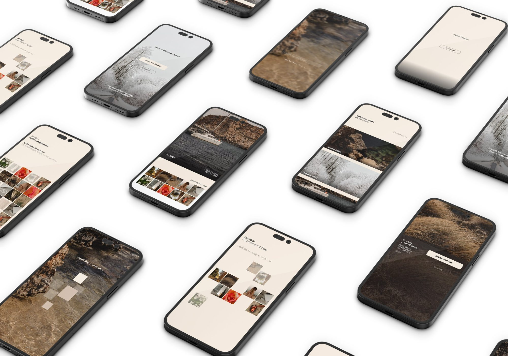
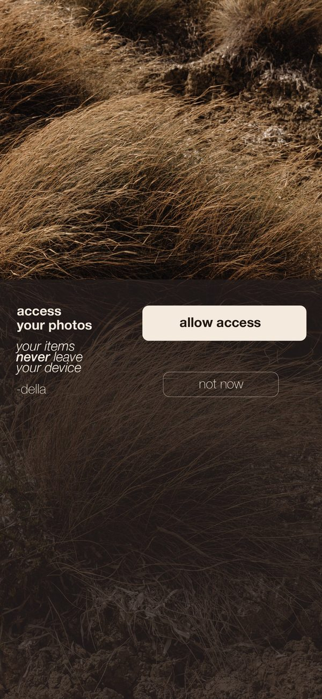
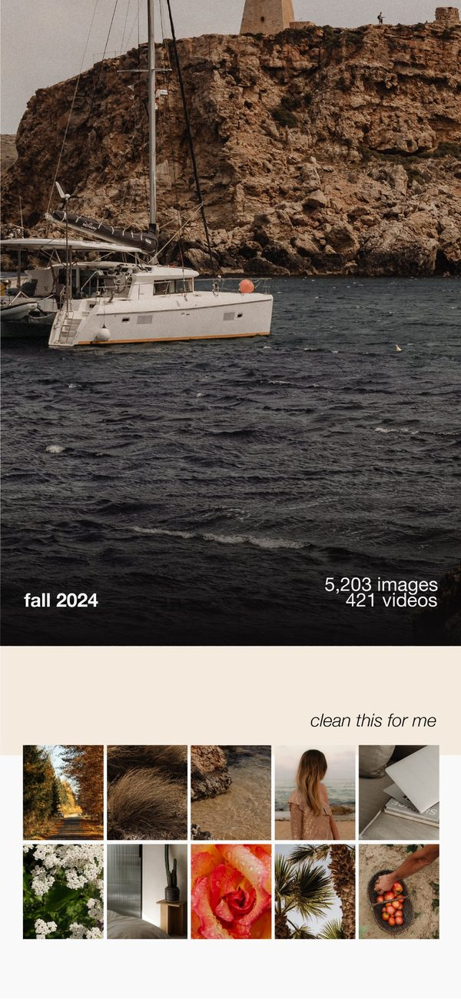
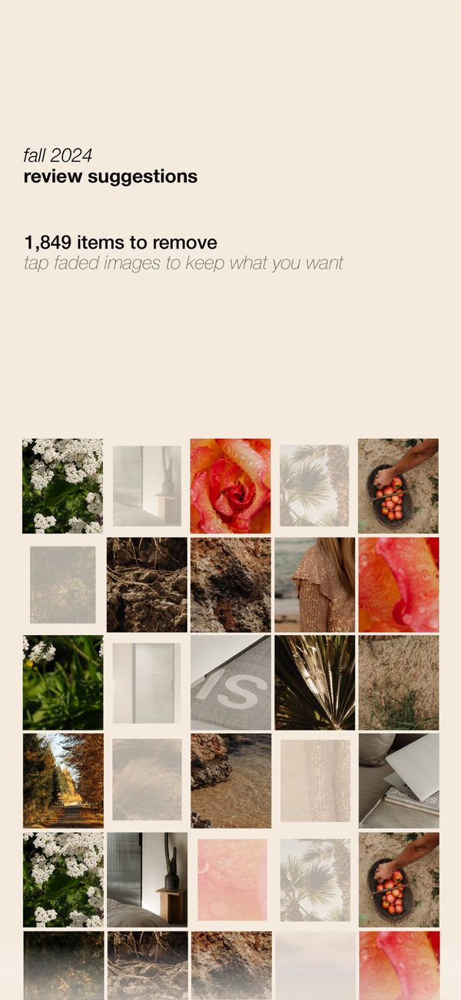

remi
summary
an AI-assisted photo-cleaning app, designed for the girls.
why
I made remi because I was sitting on a train on my way to my content strategy role which had bloated my phone storage, and realized I had no honestly reliable way to get my humongous phone storage back down without going in, one by one, and removing each photo on my own. so I remembered hearing that the best business idea is something that solves a problem. well, I had a problem.










who it's for
I designed this for the 20 something women who, like me, take 600 pictures in each pose and forget to clean them out until their phone stops working.
first sketch
at first, I sketched out an app that was much more predictable, more attention-grabbing in a social-media-addiction kind of way. I chose this current style to create a calmer, less gamified approach to an app that's supposed to help out when you're already feeling overwhelmed.
how it works
I realized that my friends' and my own behavior with our photo apps was an ideal model. we all favorite our best pictures from a batch, then choose which of those to post. so remi remembers how you like to do things: it favorites based on similar poses and how clear the image is, then lets you review. no worrying about half your memories being wiped, and anything it deletes goes to recently deleted first.
hardest screen
the home page, because you have to take years of photos and distill them into a screen that doesn't distract or irritate. I chose to sort by seasons and keep text minimal, so you can keep going calmly straight toward your goal.
design
for the look I went after beauty brands like rhode instead of the usual utility apps, so big photos, lots of space, and your library sorted by season like winter 2024. your photos never leave your phone, and I signed the permission screen myself.
next
next, I would develop remi in swiftUI for the app store. right now I'm designing the interface for a personal health tracking app, with the same emphasis on low-stress, healthy involvement.